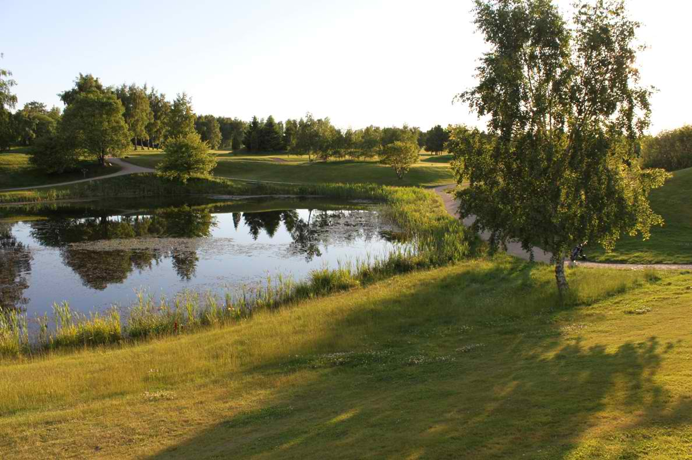
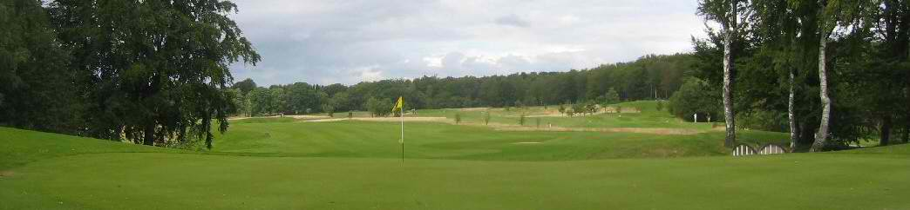
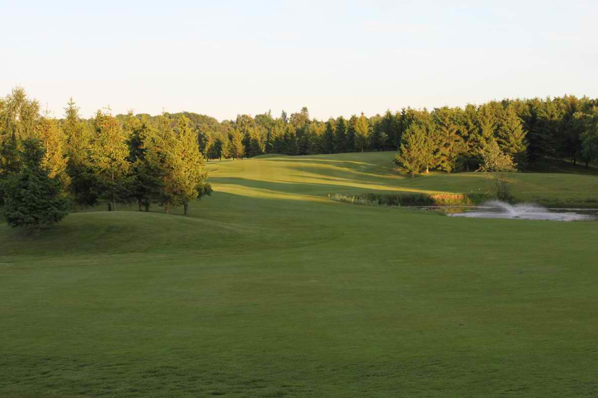

<div class="pages">
  <div data-page="arbejdsmetode" class="page navbar-fixed toolbar-fixed" >
    <div class="navbar">
      <div class="navbar-inner">
        <div class="left">
          <a href="#" class="link back icon-only"><i class="icon icon-back"></i></a>
          <!-- <a href="#" class="back link icon-only"><i class="icon icon-back"></i></a> -->
        </div>
        <div class="center">Arkitektens arbejdsmetode</div>
        <!-- <div class="right"></div> -->
        <div class="right">
        </div>
      </div>
    </div>
    <div class="page-content" style="padding-top:45px;">
       <div class="content-block">
          <p><b>Arkitektens arbejdsmetode</b></p>
          <p>af Arkitekt Rolf Henning-Jensen, Dansk Golf Design</p>
          <p><b>Planlægning</b><br />
          Ved planlægningen af en golfbane skal man forsøge at iscenesætte golfspillerens vandring gennem det foreliggende terræn. På den ene side skal den landskabelige oplevelse gøres rig og varieret, på den anden side skal flest mulige at terrænets landskabselementer indarbejdes i baneudformningen som spille-tekniske forhindringer.
          </p>
          <center></center>
          <p><b>Landskabet</b><br />
          Arealets landskabsmæssige indhold som levende hegn, bakker, søer og vandløb skal indarbejdes, så disse kan 'komme i spil' på så mange huller som muligt.<br />
          Et yderligere krav til golfbanen er, at spillere skal kunne udfordres; banen skal være spilbar for spillere på alle niveauer, men aldrig unfair.<br />
          Kan man samtidig indarbejde spillerytmer, hvor de enkelte hullers spilletekniske sværhedsgrad afvejes i forhold til hinanden (HCP-nøglen), kan man måske bidrage til et bedre sportsligt resultat og dermed til golfspillerens humør.
          </p>
          <p>Arealets landskabsmæssige indhold som levende hegn, bakker, søer og vandløb skal indarbejdes, så disse kan 'komme i spil' på så mange huller som muligt.<br />
          Et yderligere krav til golfbanen er, at spillere skal kunne udfordres; banen skal være spilbar for spillere på alle niveauer, men aldrig unfair.<br />
          Kan man samtidig indarbejde spillerytmer, hvor de enkelte hullers spilletekniske sværhedsgrad afvejes i forhold til hinanden (HCP-nøglen), kan man måske bidrage til et bedre sportsligt resultat og dermed til golfspillerens humør.
          </p>
          <center></center>
          <p>Grundlæggende 'spilleregler' vedrørende design af en golfbane<br />
          Én af de helt store indenfor golfbanearkitekturen, dette århundredes største, Alister MacKenzie, oplister i sin bog, "The Spirit of St. Andrews", bl.a. følgende (han beskriver lay-out af en 18-hullers golfbane): <br />
          • Hvert hul skal have sin egen karakter<br />
          • Lille afstand fra green til næste tee-sted<br />
          • Forsøg at lave 2 sløjfer af 9 huller - Dette har ikke været muligt på Hornbæk Golfbane, idet klubhusets placering i den sydlige ende af arealet, umuliggjorde at få gode golfhuller 'ind' til klubhuset 2 gange (9. og 18. hul), samt gode golfhuller 'ud' (1. og 10. hul)<br />
          • Alle kunstigt opbyggede features skal være 'naturlige', så naturlige at en ny ikke er istand til at se forskel på det kunstige og det naturlige<br />
          Der skal være et antal huller med "heroic carries" fra tee-stedet, dog skal der være en alternativ spillerute for den mindre dygtige spiller (nye course rating, gule og røde tee-steder er ikke længere herre- og dametee-steder)<br />
          • Der skal være et stort antal af 'gode' par-4 huller og mindst 4 stk. par-3 huller
          <br />
          • Der må ikke være blinde slag ved approach-slag
          <br />
          • Der skal være variation i hullerne, så 'alle' slags slag skal bruges, brassie-slag, jern-slag, pitch og run up slag o.l. (brug af alle køller og jern i bag'en)
          <br />
          • Man skal undgå at designe huller, hvor man skal lede efter tabte bolde (hellere en synlig hazard end høj rough)
          <br />
          • De enkelte huller skal være udfordrende for scratchspilleren, som skal slå gode slag, og slag som han hidtil ikke har kunnet slå (Et strategisk hul er, hvor forhindringerne oftest ligger på linien til greenen, og hvor den sikre spillerute oftest er meget længere. Går det godt, skal man belønnes, går det skidt, straffes man oftest hårdt)
          <br />
          • En fortsættelse ved ovenstående er, at højhandicapperen også skal have glæde ved at spille golf, han skal ikke hele tiden spille ud af bunkers og miste en masse slag. Han skal kunne undgå forhindringer ved at spille en stor omvej
          </p>
          <center></center>
          <p>
             En anden kendt engelsk golfbanearkitekt, F.W. Hawtree, skriver i sin bog, "The Golf Course" bl.a.:
             <br />
             • Den ideelle plan skal udtænke en række huller, som udnytter 'hele' arealet
             <br />
             • Undgå parallelle fairways (samme spilleretning)
             <br />
             • Undgå out of bounds i slice-siden
             <br />
             • Afpasse længder, Par-3 fra 110 til max 200 meter, Par-4 mindst 300 meter og ikke over 410 meter. Hér for hvid tee, for øvrige tees afpasses længden, så forhindringer i landefelterne bliver de samme
             <br />
             • Indarbejdede zoner, med spilleteknisk forskellige sværhedsgrader på de enkelte greens, således at greenkeeperen i den daglige 'flytning' af de enkelte huller kan ændre banens spillemæssige sværhedsgrad fra let, til middel og endelig til svære hulplaceringer
          </p>
          <p>
            H.S. Colt, "The book of the Links", 1912:
            <br />
            ..... work in all the naturel features, not developing them more than was essential but using them fully to provide a course with its own character
            <br /> Quotations by Robert Trent Jones
          </p>
          <center></center>
          <p>
            • Now Trent has gone, he died 14th of June 2000. Robert Trent Jones leaves a philosophy of design:
            <br />
            • The flow and rhythm of the land must dictate the design of the course
            <br />
            • Golf should be an intellectual as well as a physical activity, and the player should be required to analyse a problem and devise a strategy for the play of every hole - that problem should be fairly presented
            <br />
            • Every man made feature must conform to natural forms
            <br />
            • Par should be difficult to attain and gained only after identifying the optimum target areaes and playing precise shots
            <br />
            • A course should be equally challenging and enjoyable for every standard of golfer, since a handicap player who scores 90 will enjoy his golf and come back again, but if he scores 120 he will give up the game
          </p>
          <center></center>
        </div>
    </div>
    </div>
    </div>
  </div>
</div>
